J.D. Power 2023
Vehicle Dependability
152 problems per 100 vehicles
1st / 18
Kia’s online experience supports buyers through vehicle research and customization, but much of the purchasing journey continues through independently operated dealerships. Over five weeks, our team redesigned how those two sides of the experience could connect. I led the customization, price comparison, and buyer profile experiences, while contributing to research, testing, and interaction decisions across the final journey.
The project began with a prospective Kia buyer who received a dealership quote far above what she had seen online. Looking beyond that experience, we found similar frustrations across forums, where unexpected fees and pricing differences often surfaced late in the buying process.
Industry data suggested the disconnect extended beyond pricing alone. Kia performed strongly in vehicle dependability while ranking at the bottom of its segment in sales satisfaction.
152 problems per 100 vehicles
766 out of 1,000 pts
J.D. Power 2023 - n=30,062 dependability; n=37,234 satisfaction
The vehicle itself was not necessarily the problem. The experience of buying it was.
To understand the pricing issue beyond a single touchpoint, we examined the problem from the buyer, market, and dealership sides.
Research included: Desk Research · 16-Person Survey · Competitor Analysis · Semi-Structured Interviews
KEY FINDINGS
Buyers were researching online, but still arriving uncertain
55% of buyers lacked enough information to decide confidently, while 85% still visited a dealership during the purchase process.
→ Prepare buyers for the dealership, rather than replace it.
Competitors were reducing uncertainty earlier
Tesla, Lexus, and Buick surfaced pricing, inventory, comparison, and dealership information earlier in the journey—support Kia's experience was missing.
→ Kia needed stronger decision support, not just easier navigation.
Dealership independence limited how transparent pricing could be
Pricing and inventory were managed independently across Kia dealerships, limiting how consistently they could be represented online.
→ Rather than promise one definitive price, we needed to explain price changes and set clearer expectations before dealership.
Using our research as a benchmark, we audited Kia’s existing experience to see where those gaps appeared in the product. Critical information needed to move toward purchase was often buried, unclear, or missing.
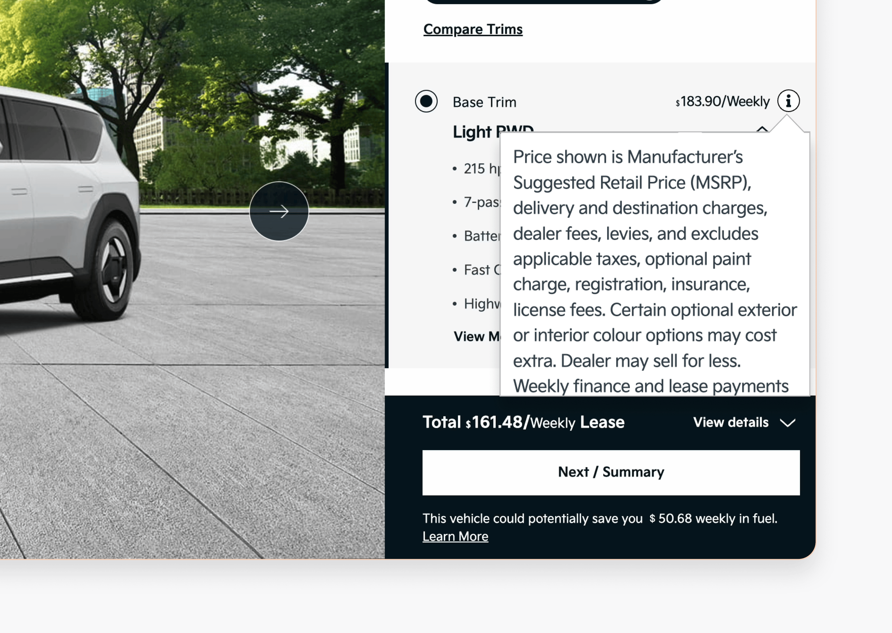
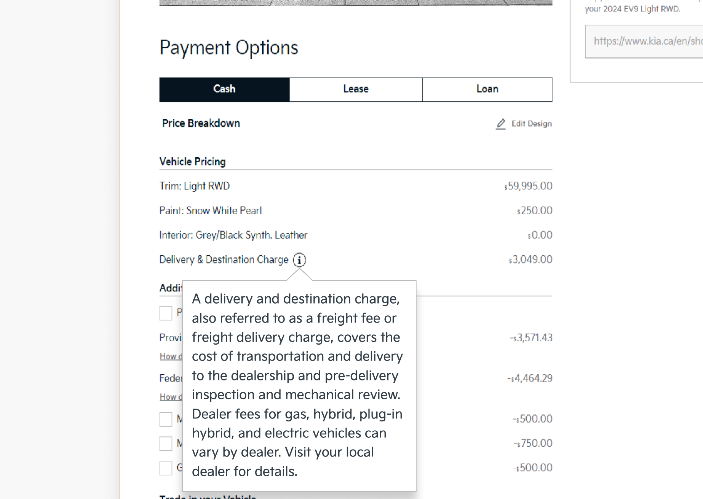
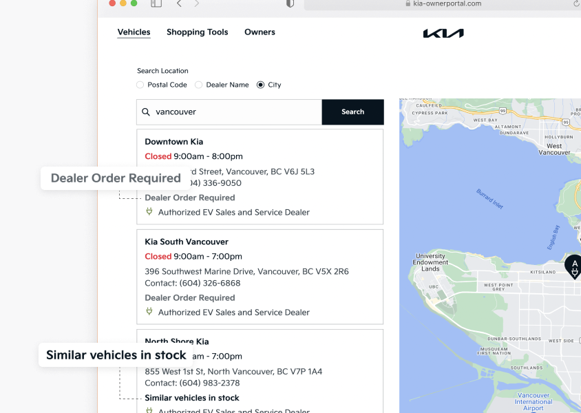
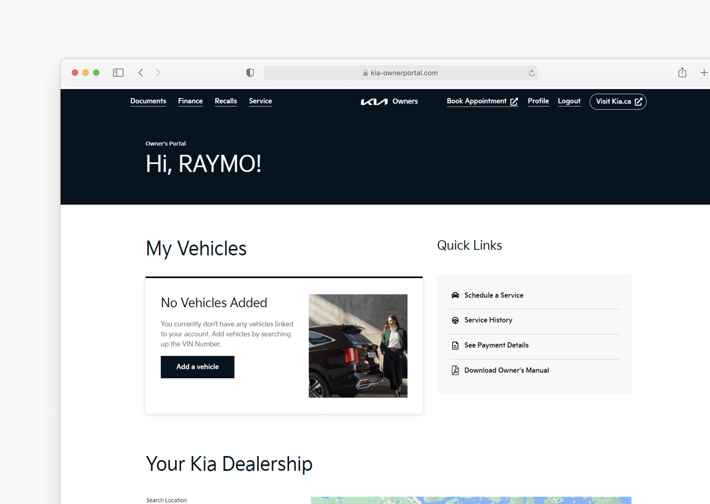
Give Kia buyers the confidence to make informed decisions online and arrive at the dealership prepared to move forward?
We began with a design sprint, moving from independent sketches to anonymous heatmap voting to surface the strongest ideas. Six directions emerged, which we mapped across the journey before prototyping and testing.
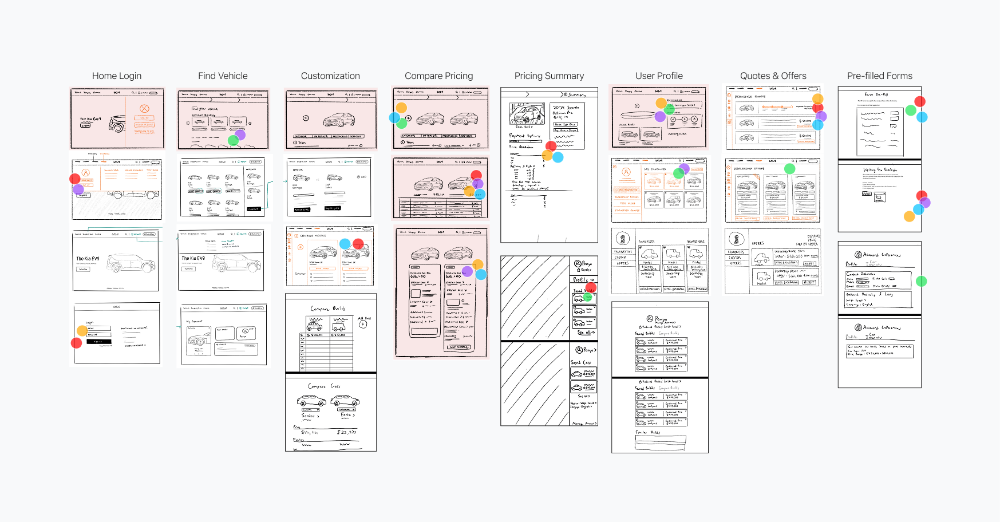
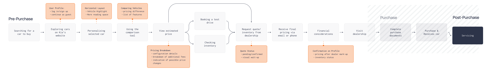
Using the selected directions, we built a testable prototype and compared it with Kia’s existing website. Participants found research and price comparison easier, but several gaps still made it difficult to make informed decisions.
Testing included: A/B comparison · Think-aloud testing · 4 participants · Post-questionnaire and interview
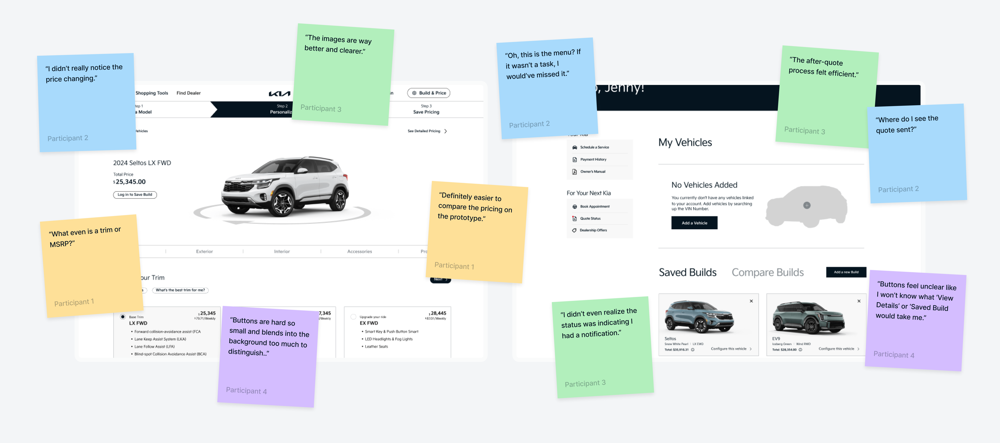
Research and comparison became easier.
Participants responded positively to clearer imagery, structured personalization, and side-by-side price comparison.
Pricing and next steps were still unclear.
Price changes, automotive terminology, quote status, and the path toward the dealership continued to create uncertainty.
Testing showed that clearer pricing alone didn’t make decisions easier. Revisiting Kia’s configuration flow showed why: trim selection relied on automotive terminology with little context for buyers unfamiliar with the differences.
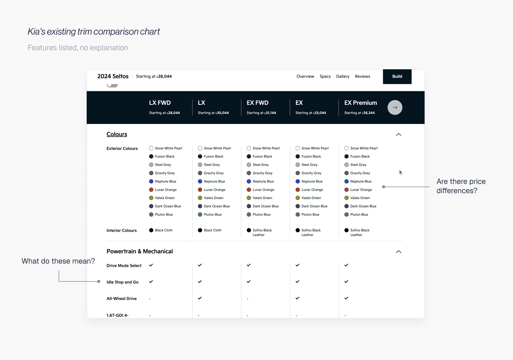
I proposed a new trim direction using plain-language explanations and interactive visual examples, then developed it collaboratively with the team to make differences between options easier to understand.
Our journey helped buyers configure vehicles, compare options, and save information to a profile. But once the dealership became involved, much of that preparation stopped on the buyer side. We examined Activix, Kia dealerships’ CRM, to understand how buyer information carried into the dealership.
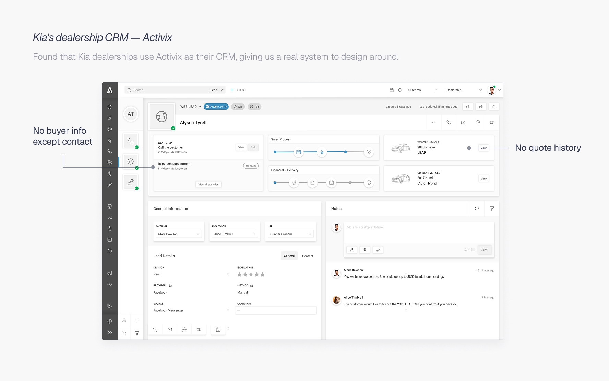
With little time left, expanding the journey meant squeezing in one final sprint. I brought the opportunity back to the team and pushed to connect buyers’ online preparation to the next step into the dealership.
Final Scope
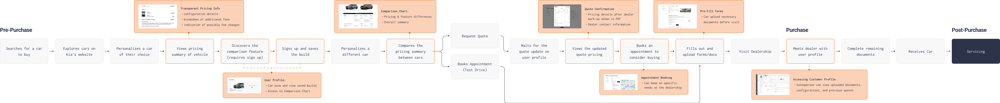
The final concept connects two moments that had previously felt separate: making an informed decision online and carrying that preparation continuously into the dealership.
We standardized recurring components and CTA patterns so the final experience stayed consistent across each stage.
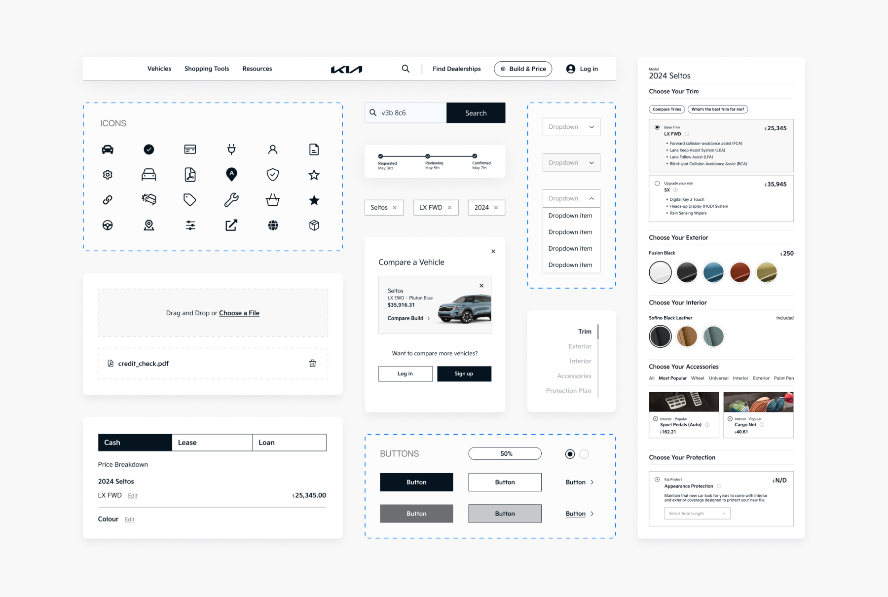
We simplified key moments where buyers needed clarity, from understanding trims to comparing prices and options.
Key Experiences: Build Personalization · Trim Explainer · Summary Page · Comparison Chart
We extended the journey beyond visualizing their dream-car to help reaslitic sense of track progress, prepare documents, book and transition into the dealership.
Key Experiences: Quote Tracking · Document Preparation · Appointment Booking · Dealer CRM
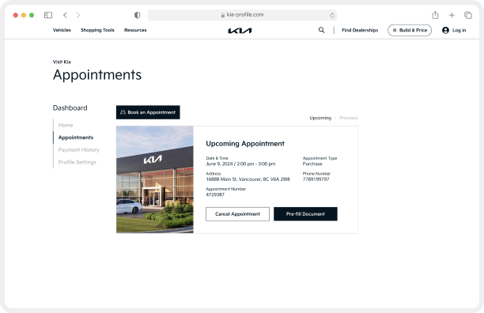
Chose to prepare forms before visiting the dealership
Participants showed a clear willingness to complete part of the dealership process ahead of time, supporting our decision to extend preparation beyond vehicle research.
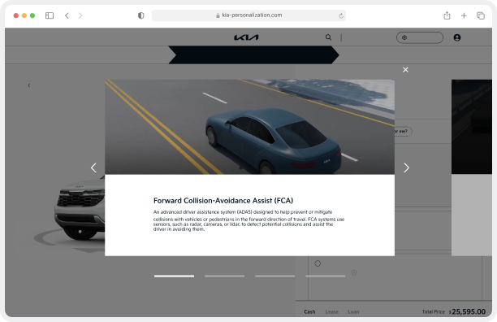
Found vehicle personalization more convenient
Participants responded positively to the redesigned customization experience and its presentation of vehicle choices.
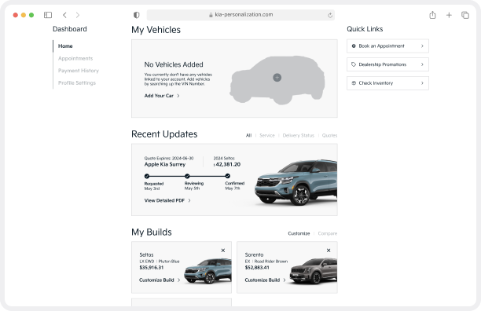
Preferred the redesigned experience
All four participants in the comparative round preferred the redesign and said they would recommend it over Kia’s existing experience.
Entering the automotive domain without prior experience pushed me to ground decisions in research. In a high-stakes journey, I learned that efficiency alone was not enough. Helping buyers understand what they were choosing and what to expect next mattered just as much as making the experience faster.
The bigger challenge was learning to work within constraints I could not change. Kia’s dealership structure meant some problems were beyond what the website alone could solve, which taught me to focus on the highest-impact opportunities rather than a perfect solution. It shifted how I think about design, from improving individual screens to understanding the larger system around them.